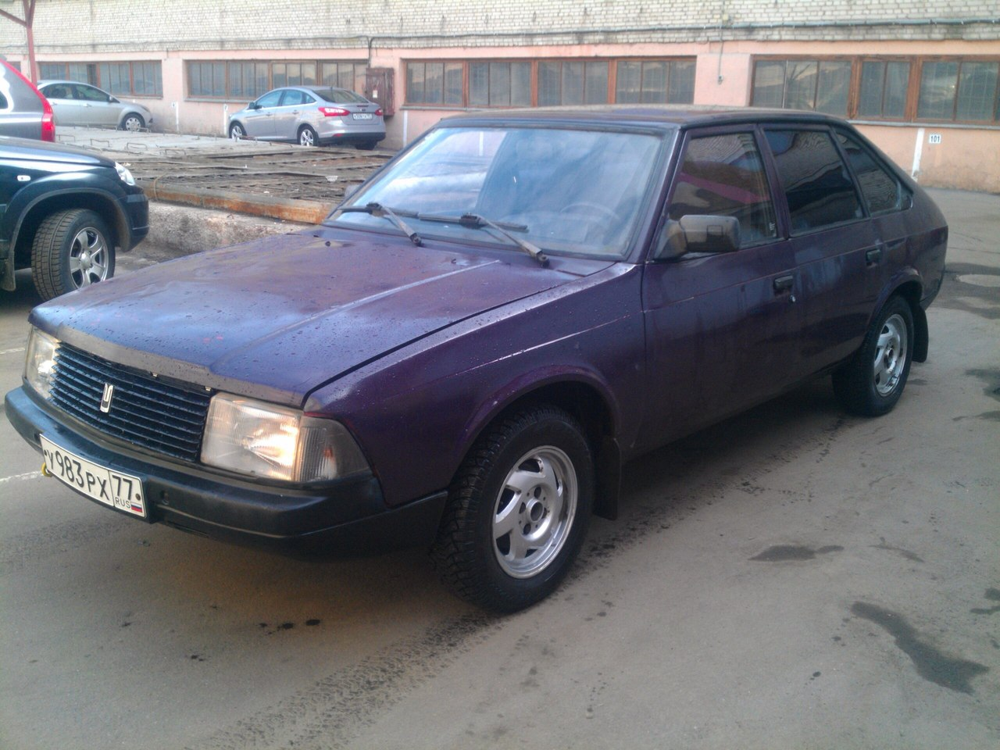
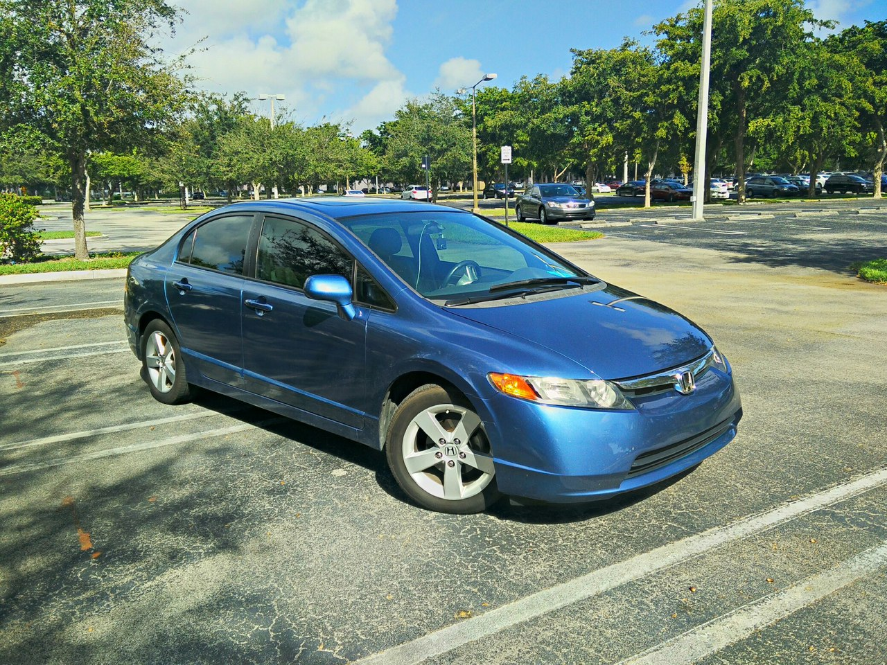
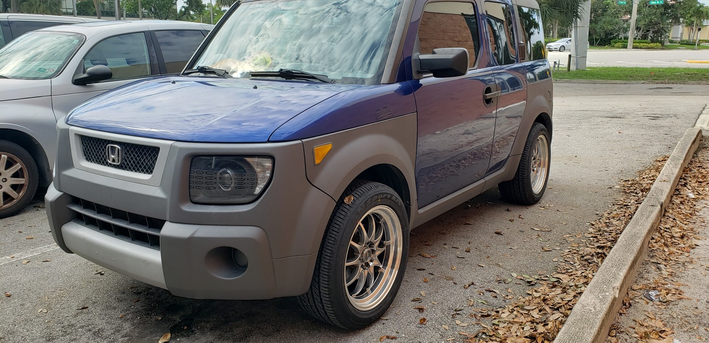

Moskvitch 2141

The Moskvitch-2141, also known under the trade name Aleko (Russian: "АЛЕКО", derivative from the name of the automaker "Автомобильный завод имени Ленинского Комсомола",
Avtomobilny zavod imeni Leninskogo Komsomola, meaning "Automotive Factory of Lenin's Komsomol"), is a Russian mid-size car that was first announced in 1985 and sold in the Soviet Union and its successor states between 1986 and 1997 by the now defunct Moskvitch Company,
based in Moscow, Russia. It was replaced by the modernised M-2141-02 Svyatogor and its sedan body version, the M-2142, in 1997–2003.
- Engine: 2.0 Renault F3R 112 HP
- Production year: 1998
- Length: 4.35 m (171.3 in)
- Curb weight: 1,070–1,080 kg (2,358.9–2,381.0 lb)
Honda Civic

The eighth generation Honda Civic was introduced in September 2005, for the 2006 model year.
This generation introduced the "two-tier" instrument panel. In many countries (USA, UK, New Zealand),
all models (including the base model) come standard with power windows, anti-lock brakes (ABS), and side/curtain airbags (for a total of six airbags).
Additionally, the 2006 models acquired ULEV-2 (Ultra Low Emission Vehicle) certification and boast a more powerful 1.8-litre engine than the 2005 counterparts while retaining almost equal fuel economy.
- Engine: 1.8 L R18A1 I4 139 HP
- Production year: 2008
- Length: 176.7 in (4,488 mm)
- Curb weight: 2,600 lb (1,179 kg)
Honda Element

The Element followed a concept called Model X which was developed by a core group of Honda R&D engineers in 1998 and debuted at the 2001 North American International Auto Show in Detroit.
The Model X was designed as an activity-oriented vehicle combining features of a pickup truck and a sport utility vehicle, and its styling was inspired by a lifeguard station, its roofline arched to evoke the curve of a surfboard.
- Engine: 2.4 L I4 (petrol) 166 HP
- Production year: 2004
- Length: 169.3 in (4,300 mm)
- Curb weight: 3,331 to 3,578 lbs